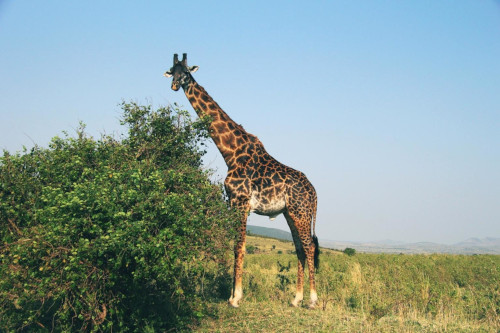
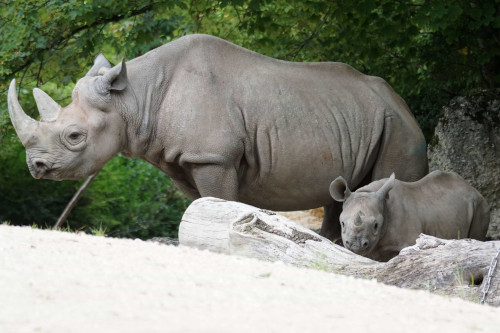

O Zoológico da Cidade
Vamos explorar alguns dos animais incríveis que vivem no zoológico da nossa cidade!

Leão
O leão é conhecido como o "rei da selva" devido à sua majestade e força. Vivem em grupos chamados de bandos.

Girafa
A girafa é o animal terrestre mais alto do mundo, conhecida por seu pescoço longo e manchas distintas.

Elefante
O elefante é o maior animal terrestre do mundo, conhecido por sua inteligência e memória excepcionais.

Hipopótamo
O hipopótamo é um grande mamífero semi-aquático conhecido por seu corpo robusto e boca enorme.

Rinoceronte
Os rinocerontes são grandes mamíferos conhecidos por seus chifres característicos no focinho.

Flamingo
O flamingo é uma ave pernalta, de plumagem rosa ou vermelha, que vive em bandos em áreas aquáticas.